there will be stats
Module 2
Considering &
Critiquing Data
Today: A Glorious History of Archaeology & Numbers
- observations on consolidation 1
- if module 1 was about capturing & creating data, what have we actually learned about that? What matters?
- With apologies to Heavy D and the Boyz:
Now that we found data, what are we gonna do (what are we gonna do) with it (with it)?
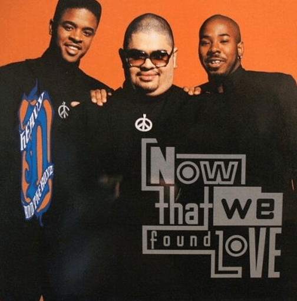
There will be stats.
but archaeological stats have their own special .... qualities.
A brief history of archaeology
Because what we do with data rather depends on the kinds of things done before
{{#}}
just an fyi - there will be discussion of some of the awful ways people have tried to make sense of things, including eugenics
Restored the Step-Pyramid of Djoser, from ca 2700 BCE
Khaemweset, son of Ramesses II
1281 BCE – c. 1225 BCE
𒀭𒀝𒈾𒀪𒀉
Nabonidus
Last King of the NeoBabylonian Empire
556 BCE – 539 BCE
Excavate/Restored temples of Naram-sin, son of Sargon, 2200 BCE
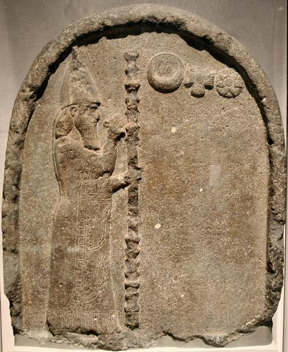
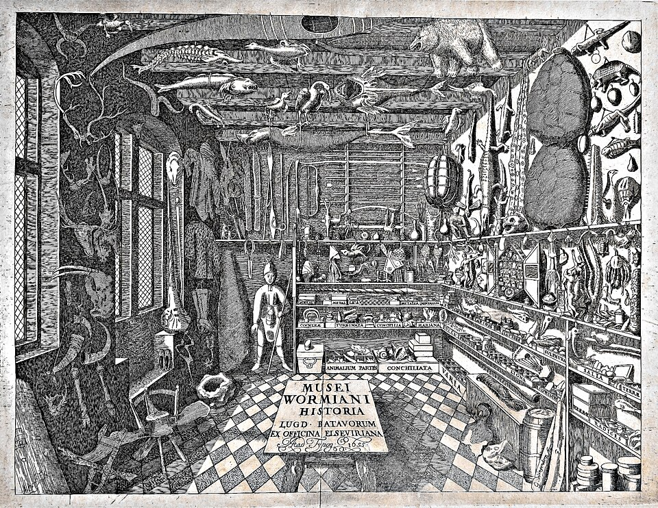
- Roman 'antiquarians' more about collecting stories/explanations than artefacts per se;
- In China, 'antiquarian' approaches to collecting inscriptions, cataloguing places emerge in the 11th century;
- However, largely no systematic approach; 'antiquarian' in Europe emerges in 17th, 18th centuries; cabinets of curiosity, wunderkammers, etc
- 'archaeology' as something concerned with physical remains emerges as a term in early 19th century
etc.
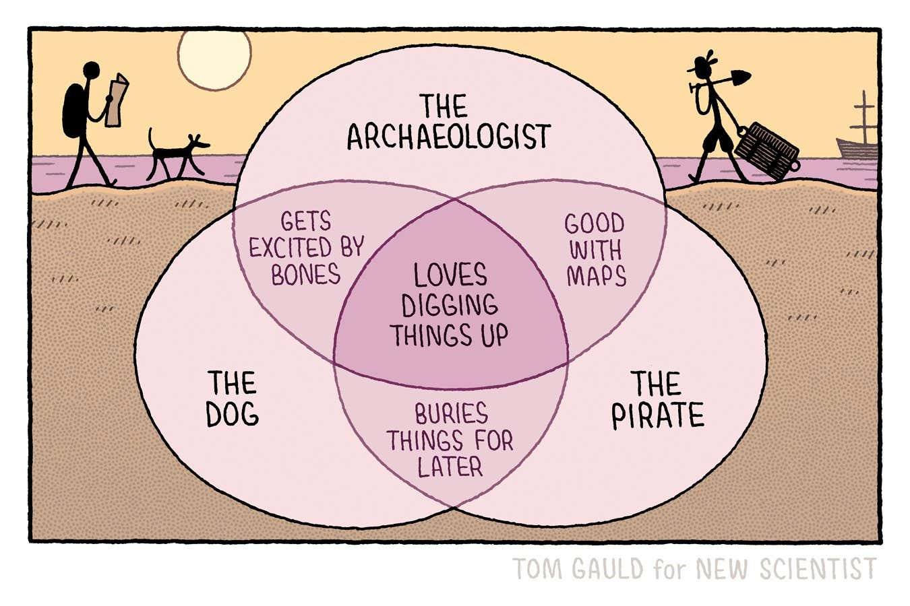
Physician, Collector, Polymath. Family fortune emerges from displacement of Irish farmers in Northern Ireland. Donates 71 000 things to the state, becoming foundation for the British Library, the British Museum, and the Natural History Museum
Sir Hans Sloane
16 April 1660 – 11 January 1753
-archaeology emerges from antiquarianism: why?
- nationalism and empire
- justification for control over territory
- collecting materials safely transforms a living people/culture into the realm of the antique, the museum, the past
Not coincidental that Thomas Jefferson excavated indigenous burials mounds in 1780s (although he did indeed try to be systematic about his observations - growing professionalism?)
Traditionally, we attribute this to Flinders Petrie in the late 19th century. But we could also point to the figure of Johann Joachim Winckelmann as a forerunner in the 18th century, Jefferson in the late 18th, and so on... the general systematization of 'natural philosophy' across the west as enlightenment transitions to industrialization/victorian.
We'll return to Petrie in a moment.
When does archaeology start being... systematic?
Associated with Michael Shanks, Chris Tilley, Ian Hodder, and others. Emerges in the 80s/90s. Scientific objectivity is impossible, we're all biased. Upshot: recognition of more than men in the archaeological record
Post-Processual
Also called 'the New'; emerges in the 1960s; closely associated with the figure of Lewis Binford. This approach gloms on to the idea that there could be overarching laws of human behaviour, and set out to find them. Hypothesis testing becomes a thing.
Processual
Assemblages of material culture with recurring characteristics are taken to signal distinct human cultures. Curiously, this also often seems to correspond with 20th century geopolitical currents. Diffusionism a key idea for explaining change.
Culture History
Conventional 'history' of archaeological thought in the 20th century
...and today? There are a lot of different intellectual frameworks for making sense of what we find.
"Theory is the eat-your-begetables part of archaeology. Everyone says it's good for you, but actually gettint it down isn't considered much fun" - Adrian Praetzellis
"Theory grabs the assumptions you hold dearest and shakes them until they fall apart." Oliver Harris and Craig Cipolla
"Theory does not provide answers, but it suggests a wider range of interesting questions" Kevin Greene
"Theory as revelatory, as opening up new spaces, as challenging assumptions" Meg Conkey
"Theory is the order we put facts in" Matthew Johnson
"Scientific theories operate at multiple levels of generalization and abstraction... High-order theories, like world views, are filters through which reality is perceived, described, and explained" Patricia Urban and Edward Schortman
Given the course so far, what's our working theory of archaeology?
Developed approaches using seriation to make sense of pottery chronologies and evolution over time
Was also a big believer in biological essentialism, ie, race as destiny.
Attributed Egypt culture to an invading 'race' from the North.
Collected human remains and sent them to England for study
Back to Petrie
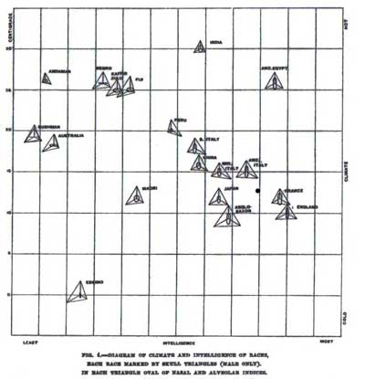
...this slide left intentionally blank.
End of part one
- what we imagine to be important influences what we are able to see
- when we then try to make sense of what we are able to see, we reach for structuring ideas that 'make sense' to us
- these then feedback into influencing what we are able to see
- we call all this 'theory', and in archaeology these structures exist at different levels
- statistical measures developed early on in archaeology, but driven in part by eugenics beliefs that were aimed at general populations
- responding to the military-industrial development of science (and hence prestige) certain brands of archaeology got swept up in the idea of overarching laws (and developed statistical approaches for the same)
- first wave feminism, marxism, anti-colonialism etc returned individuals, but stats firmly established as a tool at various levels of theoretical complexity
Part Two: Let's do some stuff
Seriation - a relative dating method
Are you counting based on relative frequencies, or presence/absence? Presence/absence is good re types of graves or monuments and so on (Petrie's contribution); frequencies for when there are masses of material (potsherds, etc) (Brainerd & Robinson)
Assumptions:
- that distribution through time follows a bell curve (ie, a 'normal' distribution around the mean, tapering off in predictable ways to either side)
- assumes 'popularity' of a design or feature is broadly similar from site to site within a culture
- lifetime of a style overlaps with other styles
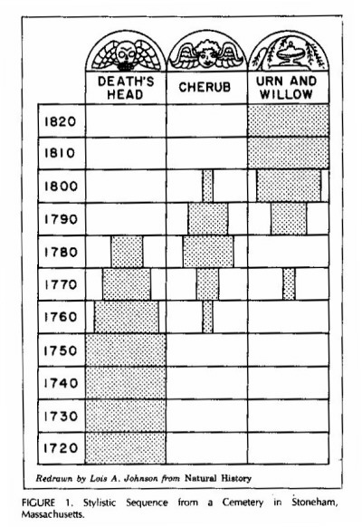
| grave | ||||||||
|---|---|---|---|---|---|---|---|---|
| ware | a | b | c | d | e | f | g | |
| bottle | * | * | ||||||
| broad-handle | * | * | ||||||
| fluted | * | * | * | |||||
| oiljar | * | * | * | |||||
| plate | * | * | ||||||
| slipware | * | * | * | |||||
| waterjug | * | * |
Produce the contextual seriation. What's the sequence? Organize from top left to bottom right.
Stratigraphy
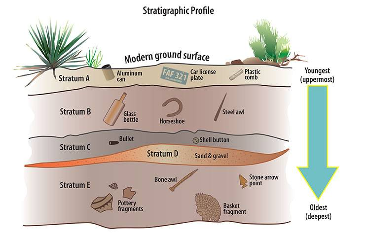
superposition: in general, youngest
is at top, oldest at bottom.
A layer/contet can be no older than the oldest artefact/event within it
contexts: single events/actions that leave traces; can be cuts, fills, structures, surfaces
(via Crow Canyon Archaeological Center)
Harris Matrix - developed by Edward Harris in 1973 as a way of working through the depositional history of a site.
Chi-square test of association ... associated with Pearson (who worked with Galton, etc...
but first of all: what kind of data are your counts?
- Nominal Data - categories without hierarchy (eye colour) (frequency distributions, mode)
- Ordinal Data - categories with hierarchy (4 star review!) (frequency distributions, mode, median, range)
- Interval Data - temperature, volume etc. '0' is a point on the scale, not an 'absence'
- Ratio Data - similar to interval, but '0' actually implies an absence ('height')
Chi-square is a test of whether or not two categorical data are independent of each other:
You start with a contingency table:
Looking at your data, you think you spot a pattern - your gut is telling you that there seems to be a connection somehow between the presence of bronze axe heads and location. You think riverside sites and bronze axe heads 'go together'.
Chi-square was introduced to archaeology in the 1950s, and compares the expected distribution (given these counts) versus the observed distribution.
| riverside sites | non-riverside sites | |
|---|---|---|
| bronze axe heads | ||
| non bronze axe heads |
*important: this approach doesn't work if any cell in the matrix has 5 or fewer examples
| OBSERVED | riverside sites | non-riverside sites | sum: |
|---|---|---|---|
| bronze axe heads | 12 | 134 | 146 |
| non bronze axe heads | 222 | 24 | 246 |
| sum: | 234 | 158 | 392 |
Then, for each cell, figure out the expected value by calculating:
(row total x column total) / grand total.
| EXPECTED | riverside sites | non-riverside sites | sum: |
|---|---|---|---|
| bronze axe heads | 87 | 59 | 146 |
| non bronze axe heads | 147 | 99 | 246 |
| sum: | 234 | 158 | 392 |
Do the deviations of observed from expected values differ in such a manner that we could conclude that there is a meaningful association between presence of bronze axe heads and riverside location?
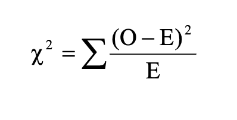
| cell | Observed | Expected | (O-E) | (O-E)^2 | (O-E)^2/E |
|---|---|---|---|---|---|
| a | 12 | 87.15 | -75.15 | 5647.52 | 64.8 |
| b | 134 | 58.85 | 75.15 | 5647.52 | 95.96 |
| c | 222 | 146.85 | 75.15 | 5647.52 | 38.46 |
| d | 24 | 99.15 | -75.15 | 5647.52 | 56.96 |
| SUM: | 256 |
chi-square
but what does it mean?
The answer depends on the 'degrees of freedom' of our original contingency table.
df=(R-1)(C-1)
In a simple 2 x 2 table, df=1.
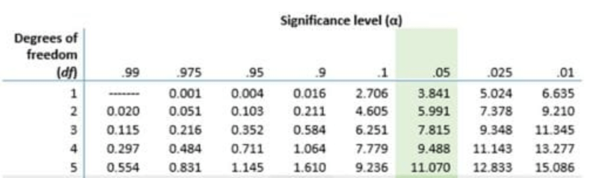
Do the deviations of observed from expected values differ in such a manner that we could conclude that there is a meaningful association between presence of bronze axe heads and riverside location?
The 'null hypothesis' is that there is no association.
Chi-square is 256; at 0.05 significance level (95% probability), the critical value is 3.8. Since 256 > 3.8, we reject the null hypothesis.
There does indeed seem to be a meaningful association between the presence of bronze axe heads and a riverine location. Phew!
chisquare can be done on much more complex contingency tables, of course. The colab notebook can help you there.
point pattern analysis
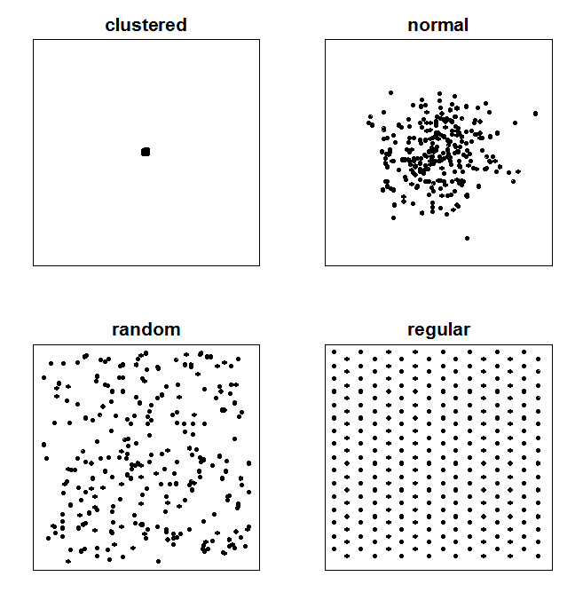
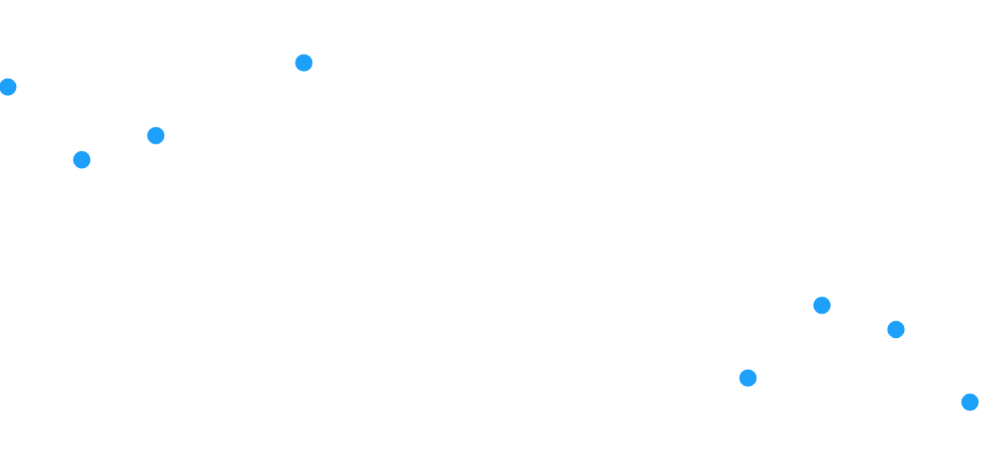
A site with 10 neolithic hearths discovered with a site 100 m2.
-
Did these people space their hearths evenly across the site to maintain private space (dispersed/regular)?
-
Did they cluster hearths around a central shelter or activity zone (clustered)?
-
Or was placement essentially unconstrained (random)?
1. We measure the distance closest pairs of points (or use a scale ruler manually!):
...take the average of those distances,
... figure out the expected average distance *if random*
... and compare the two figures.
In excel, we can make that work via a series of steps.
1. Set up a table starting in column B, row 4:
B, C, D, E hearth, x, y, nearest_point_distance
2. Enter the formula for the first hearth (in row 5), in the nearest_point_distance column:
=SMALL(SQRT(($C$5:$C$12 - C5)^2 + ($D$5:$D$12 - D5)^2), 2)
then drag that down all the way to the last row of your data. The formula compares the complete list of coordinates each time against the current coordinate, finds the nearest point, and calculates the distance.
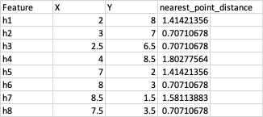
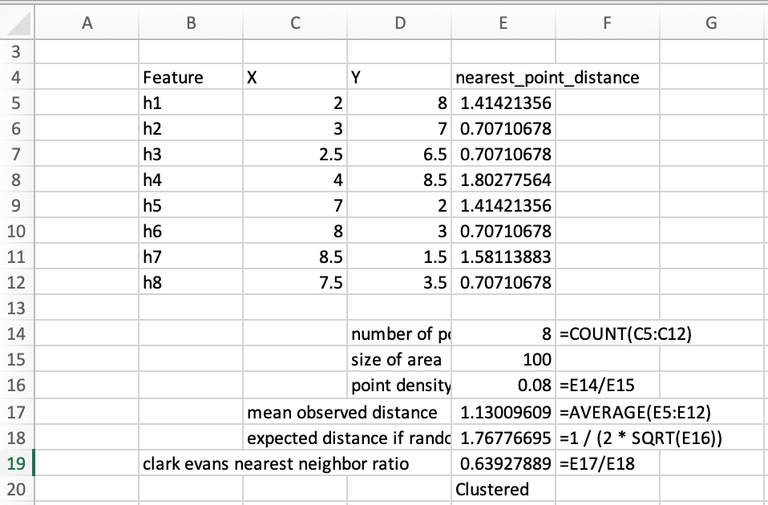
0.0 ◄─────────────── 0.63 ─────────────── 1.0 ────────────────────────► 2.15
Max Clustered CLUSTERED RANDOM REGULAR / DISPERSED
There are far more statistical tests out there that archaeologists use all the time.
The choice of a statistical test has to factor in the nature of the data and what you mean to accomplish.
Should we take into account the history of various statistical tests when deciding whether or not to use them?